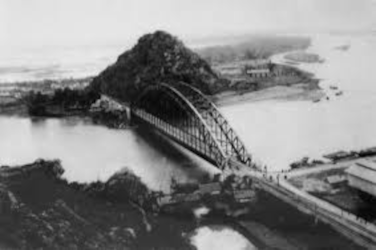
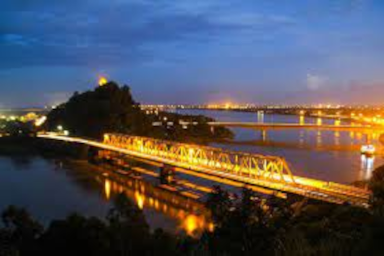

Cầu Hàm Rồng Thanh Hóa
Cầu Hàm Rồng là quần thể du lịch - di tích nổi tiếng, gắn liền với thời kỳ phát triển của mảnh đất “địa linh nhân kiệt”. Đến Thanh Hóa mà chưa một lần đặt chân đến đây thì du khách chưa thấy được “linh hồn” cũng như cảm nhận được ý chí quật cường của người dân xứ Thanh.
Đây là cây cầu đầu tiên bắc ngang dòng sông Mã, cách trung tâm thành phố Thanh Hóa khoảng 5km về phía Bắc. Do đó, nhiều người còn gọi cây cầu này là cầu Hàm Rồng sông Mã.

Với những du khách yêu thích lịch sử, thích khám phá những công trình văn hóa lâu đời thì đây là một địa điểm không nên bỏ lỡ. Công trình này gắn liền với một thời hào hùng của người dân xứ Thanh nói riêng và dân tộc Việt Nam nói chung.
Năm 1904, cầu Hàm Rồng thời Pháp do các kiến trúc sư người Pháp xây dựng với thiết kế vòm thép không có trụ giữa. Cấu trúc ban đầu tương tự như cầu Long Biên (Hà Nội), ở giữa có đường ray xe hỏa, 2 bên là đường dành cho ô tô và xe thô sơ đi lại. Vào lúc bấy giờ, đây là cây cầu hiện đại nhất Đông Dương.
Tuy nhiên, vào năm 1946, nhằm ngăn chặn bước tiến của quân xâm lược, cầu Hàm Rồng cũ đã bị Việt Minh phá hủy theo chủ trương tiêu thổ kháng chiến. Mãi đến năm 1962, cây cầu này mới được khởi công xây dựng dưới sự giúp đỡ của các chuyên gia Liên Xô và Trung Quốc. Ngày 19/5/1964, cầu Hàm Rồng mới chính thức được khánh thành và đi vào hoạt động, trở thành cầu có trụ như hiện nay.
Dù nhiều lần bị đánh phá, cầu Hàm Rồng vẫn hiên ngang đứng vững, tựa vào núi Hàm Rồng, soi bóng trên dòng sông Mã, trở thành nhân chứng lịch sử quan trọng cho ý chí kiên cường, bất khuất và lòng yêu nước của quân dân xứ Thanh trong cuộc kháng chiến chống Mỹ ở thế kỷ XX.
Nguồn: Sưu tầm